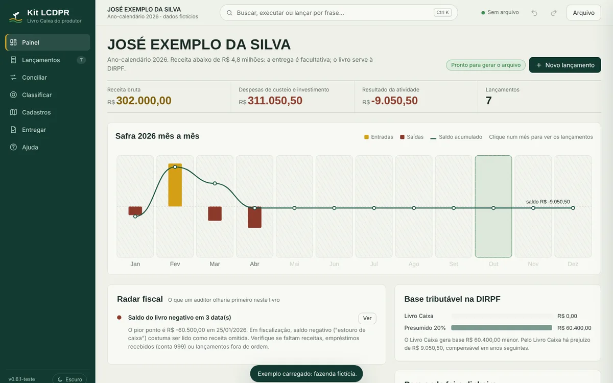
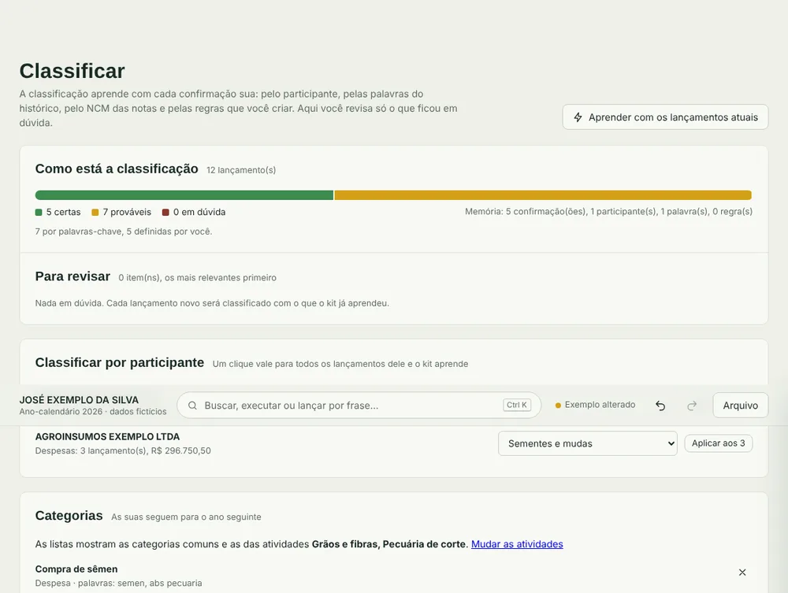
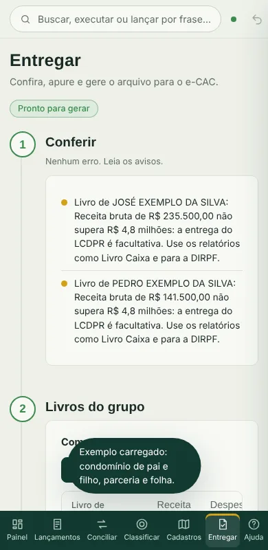

O Livro Caixa do produtor rural, do lançamento ao arquivo da Receita.
O Kit LCDPR importa notas fiscais e extratos, classifica os lançamentos, aponta o que a fiscalização olharia primeiro e gera o TXT no leiaute 1.3. Tudo no seu computador, sem internet e sem mensalidade.
Edição AC 2026, para a entrega de 2027. A demonstração abre no navegador e tem tudo, menos a geração do arquivo.

LCDPR aceito → Kit → LCDPR gerado: idêntico
Conferido com um Livro Caixa real, de 1.444 linhas, já transmitido e aceito pela Receita: o kit leu o arquivo e gerou outro igual, byte a byte.
O que ele faz por você
Lança como você fala
"Vendi 500 sacas de soja para a cerealista por 65 mil dia 15/02" vira um lançamento completo, com participante, conta e documento.
Importa o que você já tem
Notas fiscais em XML ou ZIP (até uma pasta inteira), extrato OFX, planilha, folha do eSocial e o TXT do ano anterior ou de outro sistema.
Classifica e aprende
Cada lançamento recebe categoria com o motivo: NCM da nota, histórico do fornecedor, suas regras. Um clique classifica todos os lançamentos de um participante.
Concilia nota e extrato
Casa a nota fiscal com o pagamento no banco e fica com a data e a conta certas, como pede o regime de caixa.
Aponta os riscos
Saldo negativo, dinheiro em espécie alto, despesas concentradas em dezembro, parceria com cara de arrendamento: o radar mostra antes da Receita.
Fecha a DIRPF
Compara o resultado do Livro Caixa com o presumido de 20% e mostra qual é melhor para o produtor.
Feito também para o escritório contábil
- Condomínio, parceria e casal: lance cada despesa uma vez, pelo total. O kit gera o livro de cada CPF com a parte dele, a conta 999 para o que saiu da conta do outro e um novo registro quando o percentual muda no ano.
- Folha de pagamento: lê os eventos do eSocial Download e não deixa o PIX dos funcionários contar duas vezes.
- Atividades de todo o Brasil: grãos, gado de cria e engorda, leite, aves, suínos, café, cana, frutas, hortaliças, fumo, peixes, cacau e açaí, com as categorias de cada uma.
- Vários livros de uma vez: baixe os arquivos de todo o grupo em um ZIP, com a conferência de que a soma das partes bate com o total.

Os dados ficam com você
O kit é um arquivo que abre no Chrome ou no Edge, no Windows, no Mac ou no Linux. Não precisa instalar e não usa internet: nenhum dado do produtor sai do computador.
O projeto é salvo num arquivo protegido por senha (criptografia AES-256), com salvamento automático e versões anteriores para voltar atrás.

Planos
Produtor
Para o produtor que faz o próprio livro.
- 1 CPF
- Todas as funções
- Atualizações da edição
Contador 10
Para escritórios com carteira rural.
- Até 10 CPFs
- Cópia identificada com o nome do escritório
- Condomínio, parceria e folha
Contador Ilimitado
Para escritórios com muitos produtores.
- CPFs ilimitados
- Cópia identificada com o nome do escritório
- Condomínio, parceria e folha
Beta para contadores
Até 28/02/2027, escritórios convidados usam a versão completa de graça, com os seus clientes reais, e nos contam o que acharam. Quer participar? Escreva para kitlcdpr@idnegocios.com.br com o nome do escritório e a cidade.
Perguntas frequentes
Quem é obrigado a entregar o LCDPR?
O produtor pessoa física com receita bruta da atividade rural acima de R$ 4,8 milhões no ano. Em condomínio ou parceria, o limite vale para a parte de cada um. Abaixo disso, a entrega é facultativa, e o livro serve para apurar o resultado na DIRPF.
Preciso instalar alguma coisa?
Não. É um arquivo que abre com dois cliques no Chrome ou no Edge, no Windows, no Mac ou no Linux.
Funciona sem internet?
Sim. O kit não usa internet: os dados ficam no seu computador, num arquivo protegido por senha.
O arquivo gerado é aceito pela Receita?
O kit segue o leiaute 1.3 do LCDPR e foi conferido com um arquivo real já aceito: o resultado saiu idêntico. Antes de gerar, ele confere o livro e aponta o que precisa de correção. A transmissão é feita por você, no e-CAC.
Posso testar antes de comprar?
Sim: a demonstração tem todas as funções, menos a geração do arquivo. Os projetos que você salvar nela abrem na versão completa.
Já trago os dados de outro sistema?
Sim. O kit importa o TXT do LCDPR gerado por outro programa ou do ano anterior, além de notas, extratos e planilhas.
E se a Receita mudar o leiaute?
Cada edição anual acompanha as regras do seu ano-calendário. Mudanças publicadas durante a edição são incorporadas nas atualizações.
Como recebo o suporte?
Por e-mail, em kitlcdpr@idnegocios.com.br. Nunca pedimos o seu arquivo nem a sua senha.